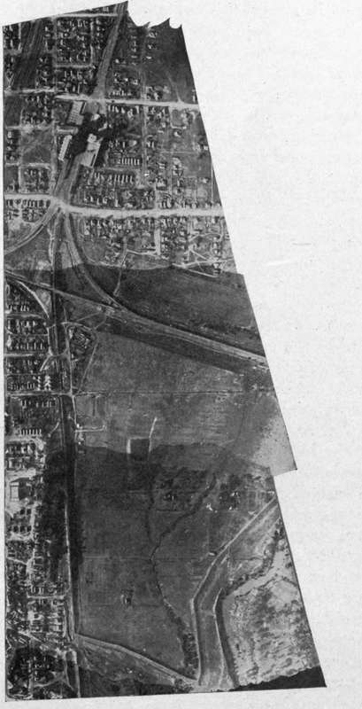

Methods And Apparatus For Testing Shutter Performance
Description
This section is from the book "Airplane Photography", by Herbert E. Ives. Also available from Amazon: Airplane photography.
Methods And Apparatus For Testing Shutter Performance
With a focal-plane shutter the desirable qualities in performance are three in number: (1) Adequate speed range, which may be taken as from 5V to -5^0 second for aerial work, (2) good efficiency, which has already been treated, and (3) uniformity of speed during its travel across the plate. Before the advent of aerial photography little attention was paid to speed uniformity, differences of 50 per cent, in initial and final speed being common in focal-plane shutters, and but little noticed in ordinary landscape work because of the natural variation of brightness from sky to ground. In the making of aerial mosaic maps the non-uniformity of density across the plate results in a most offensive series of abrupt changes of tone at the junction points of the successive prints (Fig. 140), an effect which must be minimized by manipulation of the printing light.
Fig. 140. - A strip map, showing effect of uneven focal plane shutter action.
Instruments for testing the speed and uniformity of action of focal-plane shutters are an essential part of any laboratory for developing or testing photographic apparatus and some simple device for setting and checking shutter speed should be available in the field. Every such speed tester must contain some form of time counting element— pendulum, tuning fork or clockwork. Elaborate shutter testers, suitable for determining all the characteristics of all types of shutter, have been developed and used in certain of the photographic research laboratories. For the study and setting of focal-plane shutters (whose efficiency need not be measured, as it can be simply calculated from linear dimensions), the following simple kinds of apparatus are adequate: Clock dial type of shutter tester. This consists essentially of a black clock dial carrying a white pointer which makes its complete revolution in one second or less. If this dial is photographed by the camera under test, the width of the sector traced during the exposure by the moving pointer shows the time interval. If the dial is photographed at several points on the plate—beginning, middle and end of the shutter travel—the complete characteristics of the shutter can be determined.
Fig. 23. - Apparatus for testing focal plane shutter speed throughout the travel of the curtain.
Interrupted Light Type Of Shutter Tester
For the study of uniformity of shutter action alone the apparatus shown in Fig. 23 may be employed. A is a high intensity light source, such as an arc or a gas filled tungsten lamp. L is a convex lens, focussing an image of the light source on a small aperture in the screen E. D is a sector disc which, driven by the motor M, interrupts the transmitted light with a frequency determined by the number of openings of the sector and by the speed of rotation, which must be measured by a tachometer. The light diverging from the aperture in E falls upon the shutter S, which for this test is reduced to a narrow slit of one millimeter or less. Passing through the shutter opening the light falls upon the photographic plate P. The principle is simple: If the light is uninterrupted, the plate P is exposed at all points; due to the interruptions, a series of parallel lines of photographic action result, and their distance apart gives a measure of the speed of the shutter at any chosen point in its travel. A performance curve of the French Klopcic shutter is shown in Fig. 24. The variation in speed lies over a range of two to one. So serious is this defect in these shutters that diaframs are sometimes inserted in the French cameras to cut off part of the light from the lens on the most exposed end of the plate. This expedient produces uniformity of photographic action, parallel, so that an entire camera may be inserted. In the latter case the camera lens Z3 serves to focus the slit image on the curtain C. After passing through the curtain aperture the light is focussed by the lens L± on the rotatable drum D, which carries a strip of sensitive film.
Fig. 24. - Performance of Klopcic shutter.
The operation of testing a shutter consists in focussing the slit image on the portion of the shutter whose performance is required, striking the tuning fork to set it vibrating, rotating the drum rapidly and setting off the shutter. There is thus obtained on the sensitive film an exposed strip resembling in appearance the edge of a saw, the number of teeth showing the time interval in vibrations of the tuning fork. Three exposures usually give all the points necessary but does not overcome the movement of the image, which is one of the chief faults of excessive exposure.
A more complete apparatus, adapted both to absolute speed determinations and to the study of uniformity of action, is that worked out and used in the United States Air Service (Fig. 25). At A is a high intensity light source, an image of which is focussed by the lens Lt upon a slit E, in front of which stands a tuning fork T, of period 1024 or 2048 per second. The light diverging from the slit is received by a second lens, L2 which is arranged either to focus the slit image upon the shutter curtain or to render the rays for a practical knowledge of the shutter's uniformity of action. A point of some importance, learned from numerous shutter tests, is that a focal-plane shutter should be tested in the position in which it is to be used. Aerial camera shutters should be tested in the horizontal position.
Fig. 25. - Optical system of shutter tester for Air Service, U. S. Army.
Continue to:
- prev: Distortions Produced By The Focal Plane Shutter
- Table of Contents
- next: Types Of Focal Plane Shutters
Tags
camera, lens, airplane, aerial, film, exposure, photography, maps, birdseye